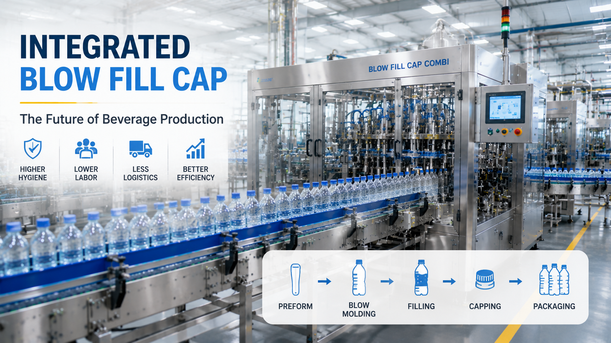

Blow Fill Cap Technology Explained: Why Beverage Factories Are Moving Toward Integrated Production

Summary
For decades, beverage factories followed a traditional production model:
PET Preform
↓
Bottle Production
↓
Bottle Transportation
↓
Filling
↓
Capping
↓
Packaging
Although this production method is widely used, modern beverage manufacturers are facing new challenges:
Higher labor costs
Increasing factory space requirements
More strict hygiene standards
Higher production efficiency requirements
Greater demand for flexible manufacturing
As a result, more beverage companies are adopting integrated Blow Fill Cap (BFC) systems, combining bottle blowing, filling, and capping into one continuous automated production process.
This article explains why integrated bottling lines are becoming an important technology choice for modern beverage factories and how Blow Fill Cap systems help manufacturers improve hygiene, efficiency, factory layout, and long-term competitiveness.
Technology
- What Is Blow Fill Cap Technology?
- Blow Fill Cap technology integrates three major production processes:
- 1. Blow Molding
- PET preforms are heated and stretched into finished bottles.
- Process:
- PET Preform
- ↓
- Heating
- ↓
- Stretch Blow Molding
- ↓
- Finished Bottle
- 2. Filling
- The newly formed bottles are transferred directly into the filling system.
- The filling process includes:
- Product dosing
- Filling accuracy control
- Hygiene management
- 3. Capping
- After filling:
- Bottle
- ↓
- Cap Feeding
- ↓
- Automatic Capping
- ↓
- Finished Beverage Container
- Integrated Blow Fill Cap System
- Instead of separating each process
- the system connects:
- Blow Molding
- Filling
- Capping
- into one continuous automated production line.
- This reduces unnecessary transportation and creates a more efficient production workflow.
- Key Technologies Include:
- High-Speed Automation
- Designed for:
- Continuous production
- Stable output
- Reduced downtime
- Hygienic Production Design
- Reduces:
- Human contact
- External contamination risks
- Bottle handling processes
- Intelligent Control System
- Includes:
- PLC control
- Production monitoring
- Equipment communication
Challenge
Why Traditional Beverage Production Models Face New Challenges
Traditional beverage factories usually separate bottle manufacturing and filling processes.
The workflow is:
PET Preform Supplier
↓
Preform Transportation
↓
Bottle Manufacturing
↓
Bottle Storage
↓
Bottle Transportation
↓
Filling
↓
Capping
↓
Packaging
While this model works, modern manufacturers increasingly face several problems.
Challenge 1: Large Factory Space Requirements
Traditional production requires additional areas for:
Bottle storage
Empty bottle transportation
Buffer zones
Material handling
This increases:
Factory construction cost
Internal logistics complexity
Challenge 2: More Manual Handling
Separate processes require workers for:
Bottle movement
Material handling
Production coordination
More manual intervention creates:
Higher labor cost
More management complexity
Challenge 3: Increased Hygiene Requirements
Beverage production is highly sensitive to contamination.
Traditional bottle transportation creates more opportunities for:
Dust exposure
External contact
Environmental contamination
Especially for：
Juice beverages
Functional drinks
Premium beverages
Challenge 4: Lower Production Efficiency
Separate machines require coordination between:
Blow molding
Conveyors
Filling systems
Packaging
Any production interruption can affect the entire line.
Solution
Integrated Blow Fill Cap Production: A Better Manufacturing Model
The solution is connecting bottle manufacturing and filling into one automated production system.
1. Higher Hygiene Performance
The bottle moves directly from blowing to filling.
Benefits:
Less human contact
Reduced contamination risk
Better production environment
This is especially valuable for products requiring higher hygiene standards.
2. Lower Internal Logistics Cost
Traditional system:
Bottle production
↓
Storage
↓
Transportation
↓
Filling
Integrated system:
Bottle production
↓
Direct filling
Advantages:
Less material movement
Less storage requirement
Reduced factory logistics
3. More Compact Factory Layout
Integrated systems require less production space.
Benefits:
Smaller factory footprint
Better equipment arrangement
Lower infrastructure investment
4. Higher Production Efficiency
Continuous production improves:
Line speed
Equipment coordination
Production stability
5. Better Automation Management
Integrated systems allow easier connection with:
Production monitoring
Quality control
MES systems
Workflow & Layout
Traditional Bottling Production Workflow
PET Preform
↓
Bottle Blow Molding
↓
Bottle Storage
↓
Bottle Transportation
↓
Filling
↓
Capping
↓
Labeling
↓
Packaging
Integrated Blow Fill Cap Workflow
PET Preform
↓
Stretch Blow Molding
↓
Bottle Transfer
↓
Filling
↓
Capping
↓
Labeling
↓
Packaging
↓
Warehouse
Factory Layout Comparison
Traditional Layout
Requires:
Separate bottle area
Storage space
Transportation routes
Integrated Layout
Features:
Compact production area
Shorter material flow
Higher space utilization
Results & ROI
- Business Benefits of Blow Fill Cap Technology
- The investment value of integrated production comes from long-term operational improvement.
- 1. Reduced Labor Requirement
- Automation reduces:
- Bottle handling workers
- Manual transportation
- Production coordination work
- 2. Improved Production Efficiency
- Benefits:
- Continuous operation
- Faster production cycles
- Less downtime
- 3. Lower Factory Operating Cost
- Savings from:
- Reduced logistics
- Less storage space
- Lower labor dependency
- 4. Improved Product Quality
- Integrated production helps maintain:
- Stable filling accuracy
- Better hygiene control
- Consistent product quality
- 5. Better Factory Expansion Capability
- Modern integrated systems support future upgrades:
- Higher production speed
- New beverage products
- Digital factory integration
Equipment List
- A complete Blow Fill Cap beverage production system may include:
- Bottle Manufacturing Section
- PET preform loading system
- Heating system
- Stretch blow molding machine
- Bottle transfer system
- Filling Section:
- Filling machine
- Product supply system
- Filling control system
- Capping Section:
- Cap sorting system
- Automatic capping machine
- Inspection & Packaging:
- Bottle inspection system
- Labeling machine
- Packaging machine
- Automation System:
- PLC control
- HMI interface
- Production monitoring system
- Logistics Integration:
- Conveyor system
- Palletizing system
- ASRS warehouse
Project Overview / Opening
Why Beverage Manufacturers Are Moving Toward Integrated Production
The beverage industry is entering a new stage of manufacturing competition.
Factories are no longer competing only through:
Low labor cost
Equipment price
They are competing through:
Production efficiency
Product quality
Manufacturing flexibility
Automation capability
Blow Fill Cap technology represents this transition by connecting bottle production, filling, and capping into one highly efficient manufacturing system.
For beverage companies planning new factories or upgrading existing plants, integrated production provides a pathway toward smarter and more competitive manufacturing.
Key Points
- Why Choose an Integrated Blow Fill Cap System?
- 1. Better Hygiene
- Reduced bottle handling improves production cleanliness.
- 2. Lower Factory Space Requirement
- Compact design improves factory utilization.
- 3. Reduced Labor Dependency
- Automation replaces repetitive manual operations.
- 4. Higher Production Efficiency
- Continuous operation improves output capability.
- 5. Suitable for Future Smart Factories
- Can integrate with:
- MES
- Digital monitoring
- Automated logistics
- Suitable Industries
- Blow Fill Cap systems are widely suitable for:
- Bottled Water
- High-volume continuous production.
- Juice Beverages
- Higher hygiene requirements.
- Dairy Drinks
- Need stable and clean production environments.
- Functional Beverages
- Require flexible and reliable manufacturing.
Implementation / Workflow
How to Implement an Integrated Beverage Production Line
Step 1: Analyze Product Requirements
Define:
Beverage type
Bottle specification
Production capacity
Step 2: Design Production Flow
Develop:
Equipment configuration
Factory layout
Automation level
Step 3: Select Technology Solution
Evaluate:
Production speed
Hygiene requirements
Future expansion
Step 4: Equipment Integration
Coordinate:
Mechanical systems
Electrical control
Production communication
Step 5: Testing & Production Launch
Complete:
FAT testing
Installation
Commissioning
Customer Value / Results
For beverage manufacturers, integrated Blow Fill Cap technology provides:
More Efficient Factory Operations
Production processes become smoother and easier to manage.
Lower Total Manufacturing Cost
Reduce:
Labor
Logistics
Space requirements
Better Product Quality
Improve:
Hygiene
Consistency
Production stability
Stronger Market Competitiveness
Enable manufacturers to respond faster to market demand.
Future-Ready Manufacturing Capability
Prepare factories for:
Smart manufacturing
Digital management
Production expansion
Conclusion / Next Step
Blow Fill Cap technology is becoming an important solution for modern beverage factories because it combines production efficiency, hygiene improvement, compact factory layout, and automation capability.
However, selecting the right technology requires understanding the complete production process, factory requirements, investment goals, and future expansion plans.
We help manufacturers worldwide design, source, integrate, and deliver industrial automation projects from China's manufacturing ecosystem.
Our capabilities include:
Beverage production line design
Blow Fill Cap integrated bottling solutions
Filling and packaging automation
Factory layout optimization
Smart manufacturing integration
Complete project coordination
Whether you are building a new beverage factory or upgrading an existing production line, our team can support your project from concept development to final delivery.
📩 Contact us through our website Contact page and share your beverage production requirements. We will help evaluate the suitable automation solution for your factory project.
SEO Title
Blow Fill Cap Technology Explained: Why Beverage Factories Are Moving Toward Integrated Production
SEO Description
For decades, beverage factories followed a traditional production model:
PET Preform
↓
Bottle Production
↓
Bottle Transportation
↓
Filling
↓
Capping
↓
Packaging
Although this production method is widely used, modern beverage manufacturers are facing new challenges:
Higher labor costs
Increasing factory space requirements
More strict hygiene standards
Higher production efficiency requirements
Greater demand for flexible manufacturing
As a result, more beverage companies are adopting integrated Blow Fill Cap (BFC) systems, combining bottle blowing, filling, and capping into one continuous automated production process.
This article explains why integrated bottling lines are becoming an important technology choice for modern beverage factories and how Blow Fill Cap systems help manufacturers improve hygiene, efficiency, factory layout, and long-term competitiveness.
Related Blog
Start with Your Business Challenge
Tell us about your warehouse, factory, or production requirements. We'll help you explore practical automation solutions and relevant project references.